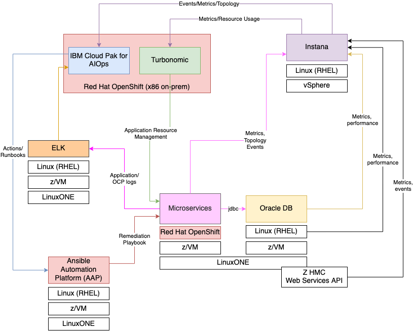
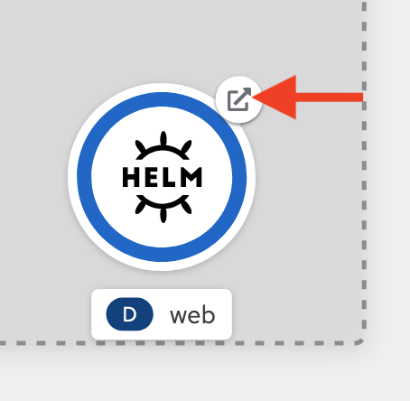
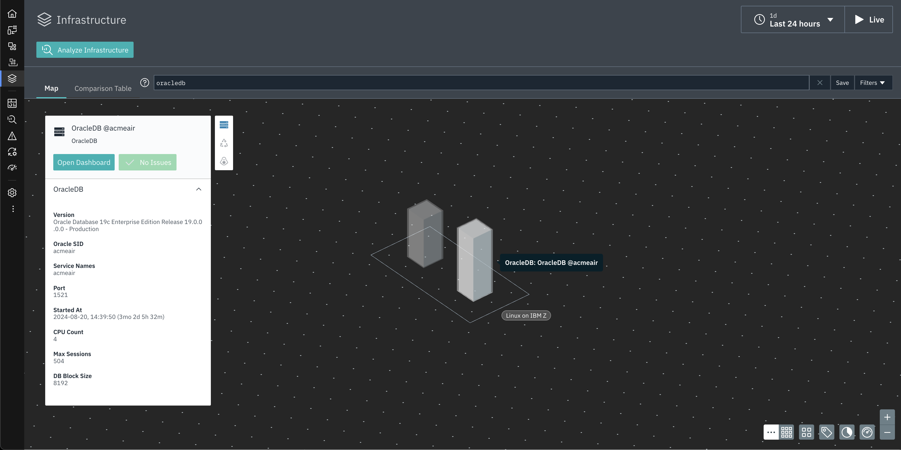
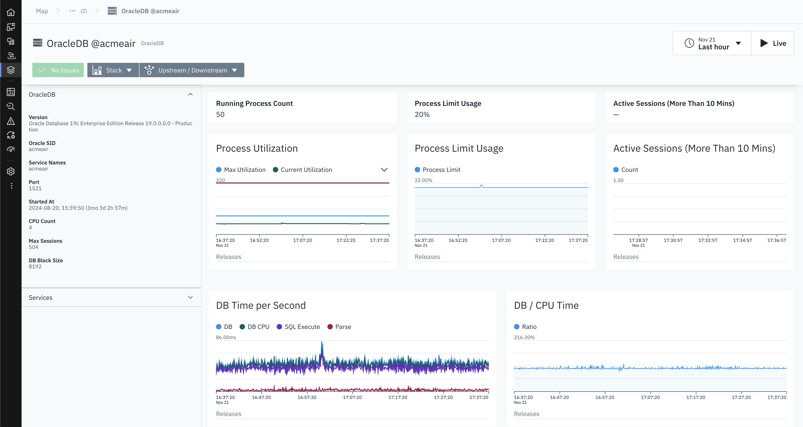
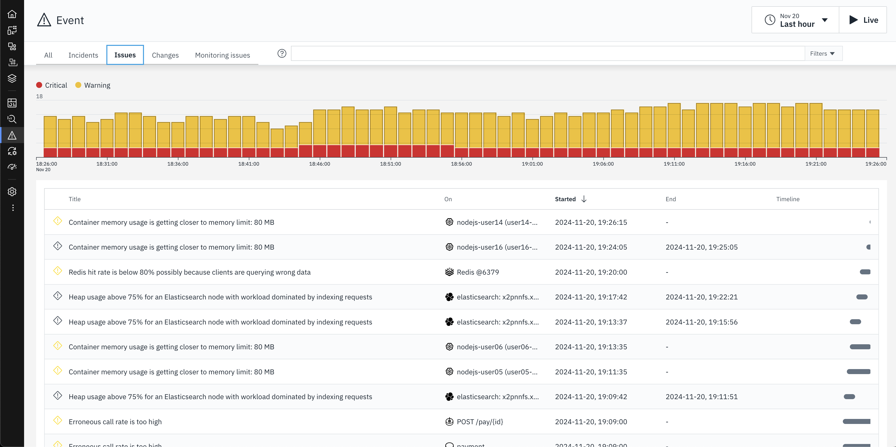
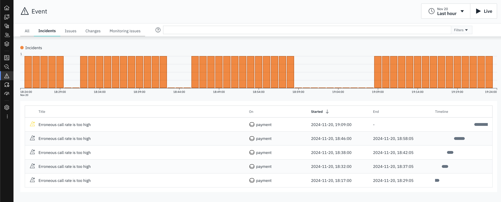

AIOps with IBM Z and LinuxONE¶
In this tutorial, you will become familiar with three of IBM's strategic AIOps solutions - Instana, Turbonomic, and IBM Cloud Pak for AIOps - and the capabilities they have to monitor and manage IBM Z applications and infrastructure.
Environment Overview¶

Connecting to the Lab Environment¶
Connection instructions with platform URLs and credentials are listed on the Environment Access Page.
Exploring the Robot Shop Sample Application¶
-
Open a web browser such as Firefox.
-
In the browser, navigate to your OpenShift console.
The OpenShift console typically begins with
https://console-openshift-console-. You can find this on the Environment Access Page.You will now see the OpenShift console login page.

-
Log in with your OpenShift credentials.
-
Under the developer perspective, navigate to the Topology page for the
robot-shopproject.
Robot Shop is a simulated online store where you can purchase robots and AI solutions. Robot Shop is made up of many different microservices that are written in different programming languages. There are 12 different microservices written in languages including NodeJS, Python, Spring Boot, and Go, along with containerized databases including MongoDB, MySQL, and Redis. Each icon in the Topology represents an OpenShift deployment for a specific microservice. Each microservice is responsible for a single function of the Robot Shop application that you will see in the following steps.
-
Open the Robot Shop web application by clicking the small button in the top right of the
webicon.This is simply a hyperlink that will take you to the Robot Shop application homepage.

The Robot Shop homepage should appear like the screenshot below, with all of the same options in the left side menu.

-
Explore the website and its functionalities from the left side menu.
You can register a new user, explore the catalog of purchasable robots, give them ratings, and simulate a purchase.
Notice that from the OpenShift and Robot Shop perspectives, you don't get much of a sense of how the various microservice applications are plumbed together, how they are performing, if they have the correct amount of resources, or if any issues are affecting the application currently. In other words, there is a lack of observability, application performance management, and proactive problem remediation.
Instana¶
Overview of Instana Observability¶
Instana is an enterprise observability solution that offers application performance management - no matter where the application or infrastructure resides. Instana can monitor both containerized and traditional applications, various infrastructure types including OpenShift, public clouds & other containerization platforms, native Linux, z/OS, websites, databases, and more. The current list of supported technologies can be found in the Instana documentation.
Viewing the Instana Agent on OpenShift¶
-
In the OpenShift cluster, navigate to the
instana-agentproject then click the circular icon on the Topology page that is labeledinstana-agent.
This is the Instana agent that is collecting all the information about the containerized applications running on OpenShift and sending that information to the Instana server.
The agent is deployed as a DaemonSet, which is a Kubernetes object that ensures one copy of the pod runs on each compute node in the cluster. Each individual Instana agent pod is responsible for the data and metrics collection for the compute node it runs on.
-
Click the other circular icon on the Topology page that is labeled
k8sensor.
The
k8sensorpods are responsible for gathering information about the OpenShift cluster itself and all of the Kubernetes objects in includes - pods, namespaces, routes, etc., and sending that information to the Instana server. -
Click the
view logshyperlink next to one of thek8sensorpods in the right-side menu.2024/03/19 16:45:53 main.go:365: pod=instana-agent/k8sensor-5b46b459dc-lrz9z shards=[01 04 07 0A 0D 10 13 16] 2024/03/19 16:45:53 main.go:365: call=senseLoop PodsCount={285} PodsRunning={282} PodsPending={3} snitch=pod sense.min=0 sense.99.9PCTL=0 sense.max=0 apply.min=2 apply.99.9PCTL=22 apply.max=27 http.do.min=0 http.do.99.9PCTL=97 http.do.max=104 encode.pmin=2.41KB encode.p99.9PCTL=34.34KB encode.pmax=254.29KB encode.tmin=0 encode.t99.9PCTL=45 encode.tmax=97 total.min=5 total.99.9PCTL=110 total.max=132 send.calls=9600 send.errors=0If you would like to see what data the agents are collecting or if you need to debug issues with collecting data from certain workloads running on OpenShift, these pod logs are a good first place to look.
In the next section, you will take a look at the other side of the OpenShift Instana agent - the Instana server that is receiving the data.
Navigating the Instana Dashboard¶
-
In a web browser, navigate to your Instana server. You can find this address on the Enviroment Access Page.
-
Log in with your Instana credentials.
When you first log into Instana, you will be taken to the Home Page. This is a customizable summary page that shows the key metrics for any component of your environment in the timeframe specified in the top right of the screen.

-
Set the time frame to Last Hour and click the Live button.
You are now seeing metrics for the environment over the previous hour, and it is updating in real time with up to 1 second granularity and no sampling.
The next thing to notice is the menu on the left side of the page. If you hover over the left side panel, you will see a menu of links that will let you dive into different sections of the Instana dashboard, rather than seeing every option.
-
Click the left side panel so the menu appears.

Next, you will go through each section in the menu.
-
Click the Websites & Mobile Apps option in the left-side menu.
You can see that Instana is monitoring a website named
Robot Shop Website. This is the set of webpages associated with the Robot Shop sample application that is deployed on OpenShift on IBM Z. Instana supports website monitoring by analyzing browser request times and route loading times. It allows detailed insights into the web browsing experience of users, and deep visibility into application call paths. The Instana website monitoring solution works by using a lightweight JavaScript agent, which is embedded into the monitored website. -
Click the Robot Shop Website hyperlink.

With website monitoring, there numerous filters and tabs with more information.
-
Navigate through the various tabs to show more data - Speed, Resources, HTTP requests, and Pages.

In the next section, you will dig into how the application resources on OpenShift on IBM Z are running.
-
Click the Applications option in the left side menu.
This Instana instance has many applications configured. We will be exploring a few of them during this lab, primarily the
Robot Shop Microservices Application.You may find it easier to use the search bar to the top right (under the timeframe selection).
-
Click the Robot Shop Microservices Application hyperlink.
An application perspective represents a set of services and endpoints that are defined by a shared context and is declared using tags. For example, in this tutorial, the Robot Shop Microservices application perspective encompasses all services and endpoints that meet the tag
kubernetes-namespace=robot-shop.Alongside the Robot Shop application running in OpenShift, there is a container running a Python application that generates load to each microservice. The metrics you see now in the application perspective are coming from that load generator. At the top of the page, you can see the total number of calls, the number of erroneous calls, and the mean latency for each call over the past hour.
As with the Websites & Mobile Applications section, the Application perspective has various tabs that contain different information. When it comes to microservices, one of the most helpful tabs in the Application perspective is the Dependency graph.
-
Click the Dependencies tab.

The dependency graph offers a visualization of each service in the Application perspective, which services interact with each other, and visual representations of errors, high latency, or erroneous calls.
There are more tabs in the Application perspective related to each individual service, error and log messages, the infrastructure stack related to the tag, and options to configure the Application perspective.
-
Click through each of the tabs.
If you pay attention while clicking through these tabs, you will notice that the payments service has an unusually high number of erroneous calls, and you could dig into the specific calls to start debugging these errors.
Next, you'll take a look at Instana's Kubernetes monitoring capabilities.
-
Click the Platforms -> Kubernetes option in the left side menu.
-
Click the atsocpd1 (cluster) hyperlink.

OpenShift clusters are monitored by simply deploying a containerized Instana agent onto the cluster. Once deployed, the agent will report detailed data about the cluster and the resources deployed on it. Instana automatically discovers and monitors clusters, CronJobs, Nodes, Namespaces, Deployments, DaemonSets, StatefulSets, Services, and Pods.
The Summary page shows the most relevant information for the cluster as a whole. The CPU, Memory, and Pod usage information are shown. The other sections, such as "Top Nodes" and "Top Pods" show potential hotspots which you might want to have a look at.
-
Click the Nodes tab.
The Nodes tab shows all of the Kubernetes nodes in the cluster in real time.
-
Click the Namespace tab, then search for
robot-shopand select it.
In the
robot-shopnamespace page, you can see details for all of the Kubernetes resources that are deployed in therobot-shopnamespace, including deployments, services, pods, and the relevant metrics for each object.In the next section, you will look at infrastructure metrics. In our case, the metrics related to a Linux server with an Oracle Database installed on it.
-
Click the Infrastructure option in the left side menu.

The Infrastructure map provides an overview of all monitored systems. Within each group are pillars comprised of opaque blocks. Each pillar as a whole represents one agent running on the respective system. Each block within a pillar represents the software components running on that system.
-
In the Infrastructure search bar, enter
oracledband select the resulting pillar.
You can now see information about the Oracle on IBM Z database monitored by Instana including its version, SID, and more.
-
Click the "Open Dashboard" button for the OracleDB.

Now you see metrics specific to Oracle that a database administrator might be interested in.
There are many IBM Z technologies supported by Instana, including z/OS. See the list of supported technologies here, here, and here
-
Click the Analytics option in the left side menu.
Instana analytics are integrated into each of the panels you've looked at so far, but you can also directly access them from the menu.
By default, you're taken to a built-in dashboard for analytics related to Application calls. You can filter by using the left side options, or by creating filters at the top.
-
Expand the left side options and select Only Erroneous and the Robot Shop Microservices application.

The primary source of errors is starting to become apparent.
-
Click the Events option in the left side menu. Click the Incidents tab if you aren't automatically taken there.
Instana can parse all of the requests, calls, traces, and other information into a stream of events and then classify and group them. Instana includes built-in events, predefined health signatures based on integrated algorithms which help you to understand the health of your monitored system in real-time. If a built-in event is not relevant for the monitored system, it can be disabled. Conversely, you can create a custom event in Instana if it does not already exist. These events can then be sent as an alert to a channel of your choice, such as email, Slack, AIOps, Splunk, PagerDuty, Prometheus, a generic webhook, or one of many more supported technologies.
Right now you're looking at Incidents that Instana has identified during the timeframe. Incidents are created when a key performance indicator such as load, latency, or error rate changes over a certain threshold.
-
Select the Issues tab.

An issue is an event that is triggered if something out of the ordinary happens. You can think of Incidents as Issues that Instana has correlated with each other to form a cohesive event.
Using Instana to Identify a Problem¶
As you looked through the various sections of the Instana dashboard, a few errors kept popping up. In this section, you will use Instana to pinpoint the root cause of the errors and fix them. When debugging with Instana, a good place to start is Events.
-
Back on the Incidents tab, click one of the Incidents titled "Erroneous call rate is too high".

The incident page shows a dynamic graph of all associated issues, events, and correlates it with other incidents to provide a comprehensive overview of the situation regarding service and event impact.
-
Click to expand the triggering event.

Instana automatically displays a relevant dynamic graph. In this case, it is the erroneous call rate for the payment service. Instana also provides a link to the analysis page for these calls.
-
Click the "Analyze Calls" button.
Now you're back on the Analysis page you looked at previously, but with the correct filters automatically applied. You can see that the
POST /pay/{id}endpoint has 100% erroneous calls. Click to expand that dropdown.Notice how the same information about the erroneous calls for
POST /pay/partner-57is displayed as it was previously, but Instana did all of the filtering. Because of the 100% error rate, it's clear that this endpoint is having an issue. Instana also provided links to the specific calls that failed. -
Click one of the "POST /pay/partner-57" links.

On the call page, you see how many instances of the erroneous call there are, a trace of the call and at which point the error occurred, the status code and error messages received, and more. From reading through the information on this page, it's apparent that the source of the error is the
paymentservice in Kubernetes. The related endpoints and infrastructure such as the MongoDB and theuserservice look healthy. -
Click the "payment" link under "Service Endpoint List".

Again you can confirm that the payment service in OpenShift is the cause of these Incidents. At this point you would want to look at the Kubernetes YAML definitions and the python code that was containerized and is running this microservice. For the sake of this demonstration, the error is caused by an intentional bug built into the load generator which is attempting to access a payment endpoint that does not exist.
Instana Wrap-up¶
You should now have a better understanding of Instana observability, how to use the platform, and the IBM Z data and metrics it can observe. The observability provided by Instana set the stage for other IBM solutions to use that data to make AI-driven insights around application performance and problem remediation.